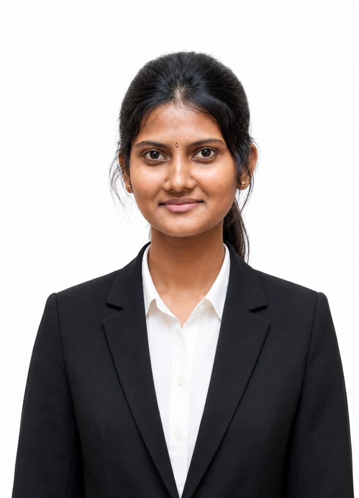

2024 — PRESENT
BSc (Honours) in Finance
University of Sri Jayewardenepura
Faculty of Management Studies & Commerce. Department of Finance.
Current GPA: 3.85FINANCIAL ANALYSIS • STRATEGIC DATA • ICASL CORPORATE
Finance Undergraduate at the University of Sri Jayewardenepura (GPA: 3.85). Combining Chartered Accountancy progression with data analytical capabilities in Power BI, Stata, and SAP S/4HANA.

I am a dedicated BSc (Honours) in Finance undergraduate at the University of Sri Jayewardenepura, merging rigorous academic grounding with technical and data analytical capabilities. My professional focus centers on financial reporting, strategic data modeling, and business risk management.
Complemented by my ongoing CA Sri Lanka Corporate Level studies and AAT Passed Finalist standing, I bring practical technical capabilities in financial systems and database management.
University of Sri Jayewardenepura
Faculty of Management Studies & Commerce. Department of Finance.
Current GPA: 3.85Institute of Chartered Accountants of Sri Lanka
Advanced financial reporting, corporate governance, and audit standards.
Association of Accounting Technicians of Sri Lanka
Completed final level with distinction in Business Communication.
Vavuniya Saivapragasa Ladies' College
3 A Passes (Accounting, Economics, Business Studies) • Z-Score: 2.0065 • District Rank 3
SAP S/4 HANA (MM, SD, FI modules), Microsoft Access, advanced Excel financial modeling, and audit documentation.
Power BI dashboards, Stata data analysis, and EViews econometric forecasting for financial decision making.
NVQ Level 4 ICT Certification with experience in database maintenance, network setups, and POS management.
Analytical thinking, structured problem solving, multilingual presentation, leadership, and public hosting.
Kugan Motor Stores (Pvt) Ltd
University of Sri Jayewardenepura
Awarded Commerce Stream Best Performer, highest Z-Score award, and University Entrance Memorial Medal at V/Saivapragasa Ladies' College.
Achieved 6th Place in All-Island Social Science Competition & 2nd Prize in Northern Province level.
Ranked 3rd in the district in G.C.E. Advanced Level Commerce Stream with a 2.0065 Z-Score.
Dual qualification progression through ICASL Corporate Level, AAT Finalist, and BSc Hons in Finance concurrently.
OPEN FOR OPPORTUNITIES
Seeking challenging roles in financial analysis, corporate finance, data analytics, and risk management.